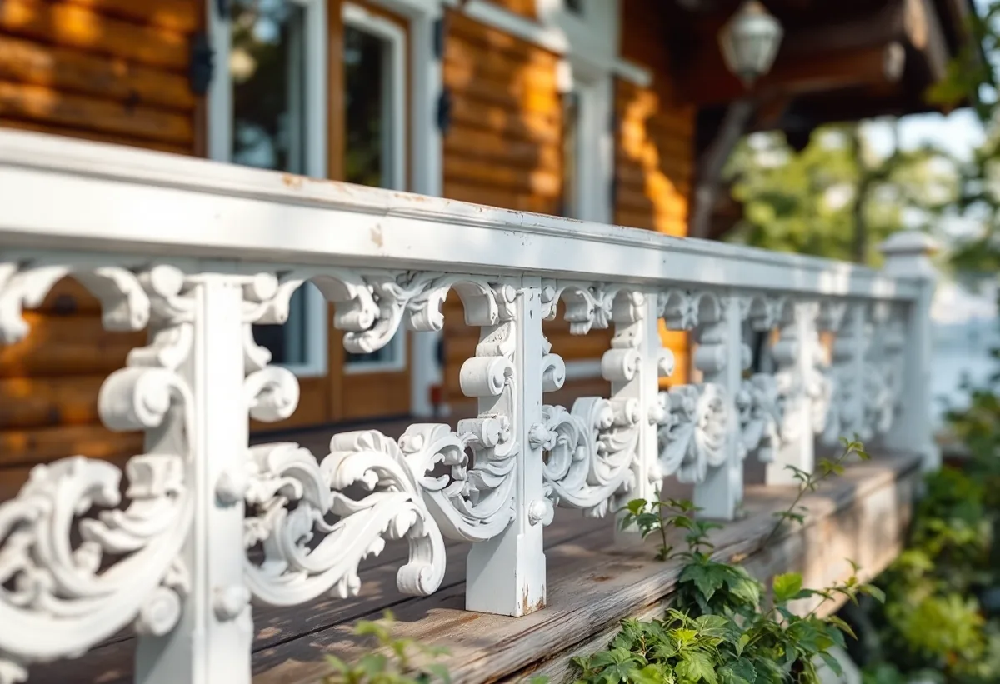

Platsbesök
Vi går runt huset, provskrapar och ser vilken färgtyp som finns och hur snickerierna mår.
Som målare i Nacka arbetar man ofta på trähus där snickerierna betyder lika mycket som väggarna: villorna längs Saltsjöbanan och sommarvillorna vid farleden i Boo. Där avgör kulturmiljökartan och färgen som redan sitter på huset mer än en kulörkarta. Vi målar fasader, fönster och rum i hela Nacka och börjar med ett gratis platsbesök.
Nackas kulturmiljöprogram för villasamhällena vid järnvägen beskriver hur Saltsjöbaden, Neglinge, Storängen och Saltsjö-Duvnäs växte fram från 1890-talet med påkostade villor i tidstypisk panelarkitektur, på stora och kuperade tomter. Solsidan bebyggdes framför allt 1930–1950.
Programmets förhållningssätt är att tidstypisk utformning av fasader, fönster, fönsteromfattningar, entrépartier, räcken, staket och grindar ska behållas. För en målare betyder det många ytor och mycket handarbete: profilerade foder, lister och spröjs ska skrapas och målas, inte bytas eller kläs in. Ett trasigt foder lagas hellre än ersätts av en slät bräda.

Programmet för sommarnöjena vid farleden berättar om schweizervillor med långt utskjutande tak, lövsågade ornament och verandor, byggda från 1860-talet i bland annat Vikingshill och på Tegelön. Ljusmålad panel dominerar på de äldre sommarvillorna. Runt sekelskiftet slog nationalromantiken igenom, och husen fick fasader i falurött eller timmerbrunt med stramare foder.
De senare sportstugorna i skogsbackarna har enligt programmet en enklare arkitektur och en naturanpassad färgsättning. För komplementbyggnader föreslås en enkel färgsättning, med knutar och foder i ungefär samma färg som fasaden.
Ornament och verandor är det som först tar stryk av väder. Vi går igenom dem bit för bit, lagar lösa delar och målar dem för hand, så att detaljerna finns kvar till nästa ommålning.
Riksantikvarieämbetets skrift om byggnadsmåleri beskriver linoljefärg som den färg som dominerade på trähus fram till mitten av 1900-talet där rödfärg inte användes. Den tränger in och fäster bra, och med åren kritar den, vilket gör nästa ommålning enklare. Den är också förhållandevis lätt att underhålla och att ta bort.
Skriften rekommenderar att måla med linoljefärg när det är varmt och torrt, helst maj–augusti, och att undvika direkt sol. Den råder också att spara små omålade provytor på undanskymda ställen, så att den som målar nästa gång kan se vad som använts. Det gör vi på äldre villor, och vi skriver upp färgtyp och kulör åt dig.
Har huset i stället fått plastfärg vid en tidigare ommålning bedömer vi om den kan målas över eller behöver tas bort. Det går inte att avgöra utan att se fasaden.
Sedan 1 december 2025 behövs normalt inget bygglov för fasadändringar som målning på ett en- eller tvåbostadshus. Nacka kommun skriver samtidigt att lättnaderna inte gäller i särskilt värdefulla byggnader och områden, där kraven på lov kvarstår och i vissa fall blir högre.
På sidan om fasadändringar förklarar kommunen att lovplikten i sådana områden omfattar alla fasadändringar som påverkar områdets eller husets karaktär. Kartan visar i lila miljöer med särskilt höga kulturvärden, och orange betyder att en bedömning kan pågå. Kulturmiljöprogrammet anger dessutom att Storängen har utökad lovplikt för bland annat omfärgning, och att antikvarisk medverkan kan krävas vid bygglov i villasamhällena.
Boverket påpekar att även ett byte av färgtyp, till exempel från linoljefärg till plastfärg, kan påverka husets karaktärsdrag. Att måla om i samma kulör räknas däremot normalt som underhåll. Vi kontrollerar fastigheten i kartan innan vi föreslår färg, så att du vet vad som gäller innan arbetet bokas.
Vi går runt huset, provskrapar och ser vilken färgtyp som finns och hur snickerierna mår.
Vi slår upp fastigheten och detaljplanen och ser om ny kulör eller färgtyp kräver lov.
Fasad, fönster, veranda och staket står var för sig i förslaget.
Lös färg skrapas bort, ornament och foder lagas och ytorna rengörs inför målning.
Utvändigt arbete görs under den varma och torra säsongen och följer solen runt huset.
Du får uppgift om färgtyp och kulör, och små provytor sparas till nästa gång.
Att måla fasader, fönster, väggar och tak samt att tapetsera räknas som rotarbete i en villa, enligt Skatteverket. Avdraget är 30 procent av arbetskostnaden, högst 50 000 kronor per person och år, och ROT och RUT är tillsammans högst 75 000 kronor. Material ingår inte. Vi drar avdraget direkt på fakturan.
Bor du i bostadsrätt ger bara arbete inne i lägenheten avdrag. Målning av fasad, balkong och utsidan av fönster och dörrar, liksom av staket och murar, ger inget avdrag.
På en sekelskiftesvilla är det detaljerna som kostar tid: profilerade foder, spröjsade bågar, verandaräcken och lövsågade ornament. Därtill kommer hur mycket färg som måste skrapas bort, om trä behöver lagas och hur ställningen kan stå på en brant sjötomt.
Platsbesöket är gratis, och du får ett skriftligt kostnadsförslag. Behövs även andra arbeten på huset samordnar vi dem – läs om villarenovering och om takarbeten hos takläggare i Nacka.
Fasad, fönster och invändig målning.
Målare i Stockholm →Takbyte, takbesiktning och plåtarbeten.
Takläggare i Nacka →Saltsjöbaden, Boo och Älta.
Takrenovering i Nacka →VA, LTA och dagvatten på tomten.
Byggföretag i Nacka →Villasamhällena vid Saltsjöbanan.
Fönsterbyte i Nacka →Linoljefärg, väder och verkstad för villafönster.
Fönsterrenovering i Nacka →Slipa och olja trägolvet.
Golvslipning i Nacka →Farledens plåttak och Saltsjöbadens villor.
Plåtslagare i Nacka →Strandskydd och villasamhällen.
Tillbyggnad i Nacka →